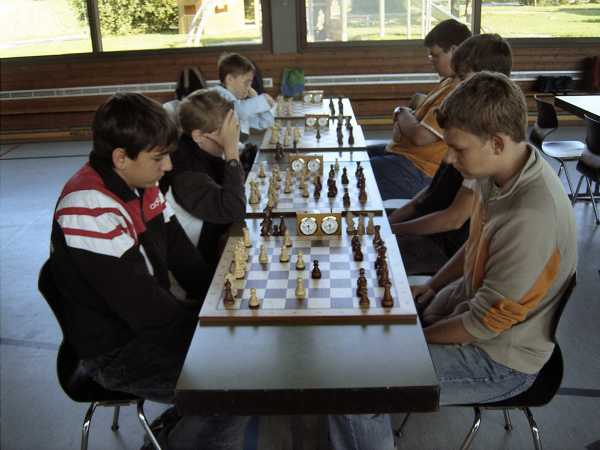
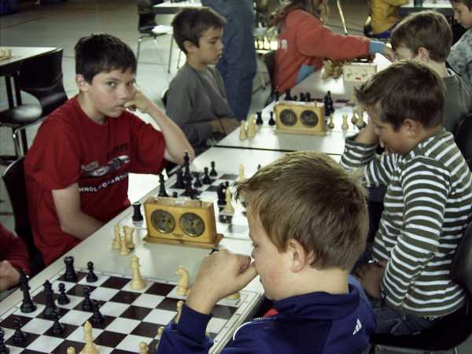
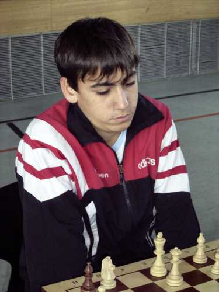
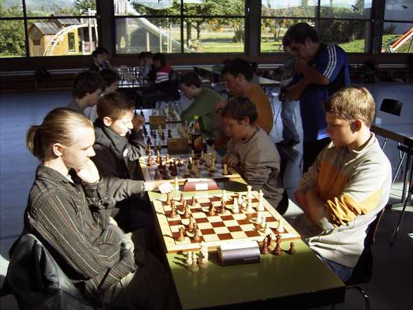
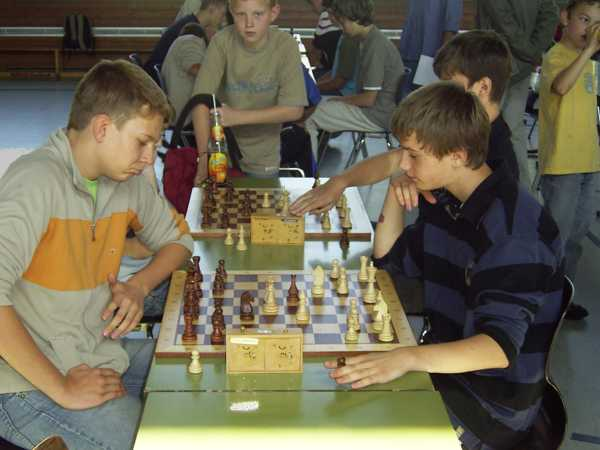

Die erste Runde beginnt...

... gleich mit einem Lokalderby.

Ein Zug, ein Zug, ...

... ein Königreich für einen guten Zug!

Schwierige Stellung?

Rafi meditiert.

Da war doch vorhin noch mein Turm...

Jakobsche - Sterzik

Und der "Klassiker": Bahner - Haag

Kinkalitzchen!

Ein bisschen Spass muss sein!

Jochen wurde 3. in seiner Gruppe

Daniel 4.

Finales Gruppenfoto